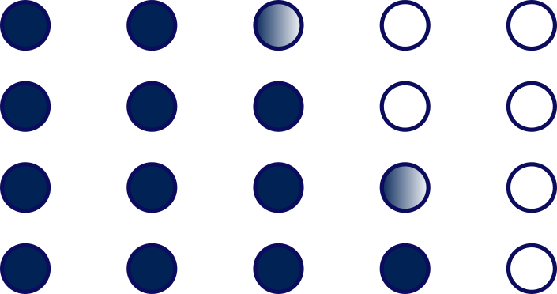
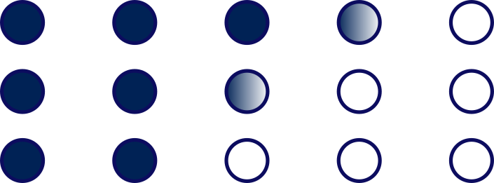
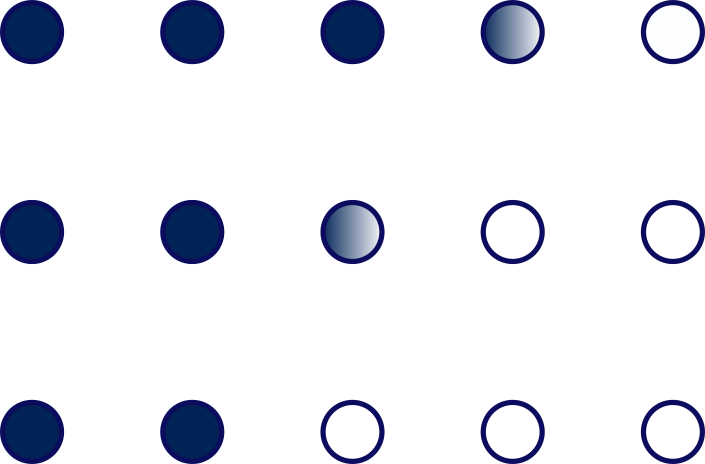

Curious and enthusiastic student, seeking a 4 to 6 months internship to conclude my MSc, in the aim of pursuing my cursus in a PhD. I'm particularly fascinated by microscale ductile processes, lithosphere behaviour, distribution and localisation of deformation and numerical modeling.
Professional Background
INTERNSHIP/FIELD TRIP
2021
DUCTILE DEFORMATION (6 months): Lab. Géosciences Montpellier: Strain and magmatic percolation in a volcanic arc root : Sapat, Pakistan
2020
DUCTILE DEFORMATION (2 months): Lab. Géosciences Montpellier: Structural and chemical caracterisation of the shear zones of Zabargad, Red Sea, development of a P-T model for the mantle upwelling (microprobe, EDS,EBSD, optical data)
AGLY MASSIF, SE Pyrénées (8 days): structural inheritance, metamorphic field gradients throughout schists, migmatites and granits of the area
2019-2017
CEVENNES, France (3 days): structural and petrological study of granits, migmatites, schists and gold-bearing associated mineralisations
BERGA, SE Pyrénées (7 days): deformation and basin dynamics linked to thrust fronts and diaprs
MONTAGNE NOIRE, France (4 days): structure of axial zone, late-orogenic extension basins
2017-2015
DIGNE LES BAINS, W French Alps (8 days): sedimentary and structural study of the Digne thrust sheet, Western Alps
BEARN, W Pyrénées; (3 days): sedimentary and structural study of the Chaînons béarnais folds, Aragon synclinal fold and W. Pyrenean axial zone
STRUCTURAL GEOLOGY, (about 3 weeks), Lab. EPOC, Talence, France: bibliographic and cartographic synthesis of Karakorum strike-slip fault, Himalaya
PAYS BASQUE, W. Pynérées (3 days) : microtectonical study of the folds associated to the Ursuya Massif upwelling
Professional experiences
2020-2017
Responsible of student mentoring at the Students Association of Geosciences, University of Montpellier
2019-2017
Participation to a R&D project of electronical compass, Castelnau le Lez, (34, France)
2017-2013
Private lessons (secondary school grade), French, Latin and Ancient Greek, Bordeaux (33, France)
Skills
Softwares

Petrel/Techlog/Leapfrog
(reservoirs and ore modeling)
Res2Dinv/PyBERT
(electric tomography)
Agisoft Photoscan/Inkscape
(photogrammetry, drawing)
QGis/ArcGis
Numerical languages
Python/LaTex
R
Matlab/SQL
HTML5/CSS3
Languages
English
(intermediary +)
Spanish
(intermediary)
Persian (farsi)
(current conversation, writen, read)
Academic Curriculum

2021-2019
Earth Dynamics and Natural Hazards Master's Degree, University of Montpellier: physical geodynamics, lithosphere tectonics and dynamics, rock mechanics, numerical modeling
2019-2017
Exploration and Reservoirs Geology Master's Degree, University of Montpellier: brittle and ductile deformation, fault-fluids interactions, ore formation, structural control upon mineralisations

2017-2014
Bachelor's Degree Geosciences and Environment, University of Bordeaux : sedimentology, geomorphology, paleo climatology, geotechnics
Further Informations
Hobbies
drawing (artistic and scientific), guitar (classical, rock, blues), literature (persian, classical)